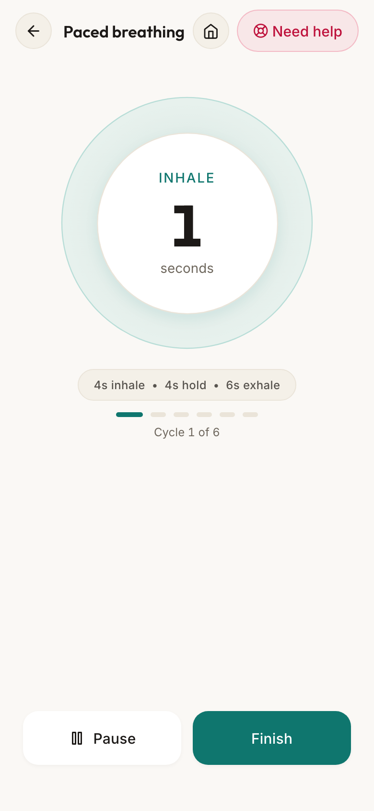
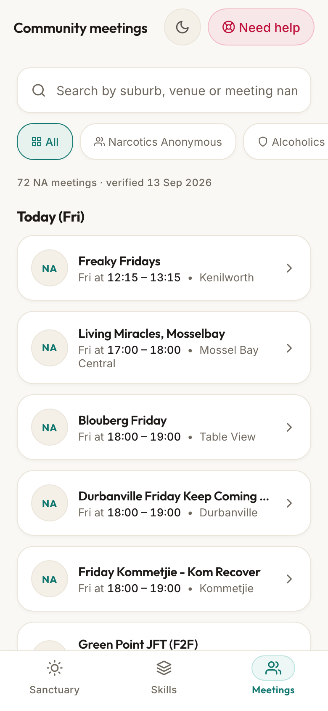
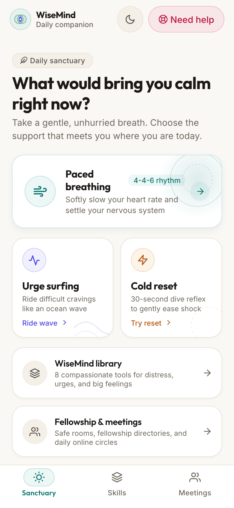
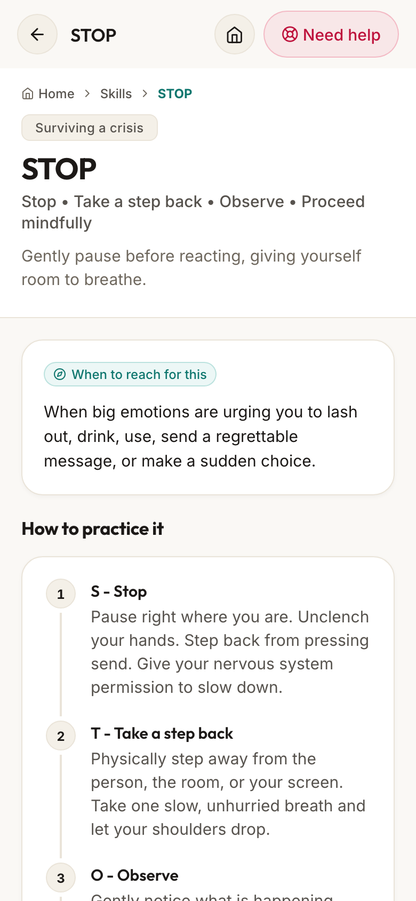

Real tools
for hard
moments.
A safe, practical space for grounding, recovery and connection.



Click any device to spotlight it into full focus.
In the moment.
Practical support, without the noise.
Distress lives in the heart rate, the diaphragm, and the autonomic nervous system. You cannot talk yourself out of an adrenaline flood. These three somatic practices intervene at the physical level first.
Want to test the rhythm right now?
Experience an interactive 4 4 6 breath cycle directly in your browser.
Body first. Words second.
Prefrontal Deactivation
When emotional arousal exceeds biological threshold, perfusion drops in the prefrontal cortex. Asking someone in panic or acute craving to think rationally is asking the impossible.
Vagal Brake Engagement
Extended exhalations and cold water stimulation send acetylcholine across the vagus nerve directly to the heart sinoatrial node, commanding an involuntary reduction in cardiac speed.
Receptive Grounding
Once the body is physically tranquilized, the executive cortex comes back online. Now, and only now, can the user apply the STOP skill, make a recovery call, or attend a meeting.
Dialectical Behavior Therapy.
Skills designed for acute survival.
DBT was developed specifically for individuals experiencing intolerable emotional turmoil. WiseMind simplifies these clinical protocols into tap friendly, offline flows you can follow when your brain is tired.
The STOP Skill
When an emotional reaction feels sudden and overwhelming, STOP puts space between impulse and action. Do not react. Do not speak. Stand perfectly still.
Stop immediately
Freeze your body. Do not move a muscle. Do not let your feelings push you into speech or behavior.
Take a step back
Physically step backward or uncross your hands. Take a deep, measured breath to break the impulse cycle.
Observe without judgment
Notice what is happening inside your physical body and in the room around you without judging it good or bad.
Proceed with intention
Ask what choice will make the situation better rather than worse. Act from clarity.

Grounding in the Cape Peninsula.
Granite boulders, freezing sea currents, and living rooms where people tell the truth without pretense. Recovery is rooted in real geography.
Verified recovery meetings.
Cape Town and online rooms.
Isolation fuels relapse. When the crisis settles, connecting with people who have walked the same path provides lasting ballast. Filter verified AA and NA meetings below.
Steps to Freedom
St Johns Parish Hall, Kloof Street, Gardens, Cape Town. Safe, quiet courtyard entrance with street parking available.
Freaky Fridays
Kenilworth Community Centre, 14 Kenilworth Road, Southern Suburbs, Cape Town. Midday solidarity format.
Morning Hope Daily
Daily morning grounding room. Camera optional for newcomers. Join safely from any private space before your workday begins.
New Beginnings Evening
Evening peer group focusing on DBT distress tolerance practice, urge sharing, and weekly accountability check ins.
Built for crisis conditions.
Zero tracking. Zero obstacles.
When a user opens an app in the middle of a panic attack or relapse urge, every unnecessary dialog is an act of hostility. We built WiseMind on four non negotiable invariants.
No Account Walls
No registration forms, no email verifications, and no passwords standing between a person in crisis and immediate relief tools.
Zero Cloud Telemetry
Your check in notes, urge records, and meeting searches are written only to local device storage. Nothing leaves your phone.
Offline Invariant
Every somatic timer, audio vibration cue, and meeting address is pre bundled. The app functions flawlessly in airplane mode.
Direct Emergency Rail
One tap access to national 112 services, WhatsApp crisis chats, and South African helplines without third party mediation.
In acute danger?
If you or someone around you is in immediate physical danger or contemplating self harm, please connect right now.
Everything you need to know.
A quiet sanctuary in your pocket.
No subscription paywalls. No personal profiles. Just real somatic tools, dialectical behavioral clarity, and the courage to meet the next breath.